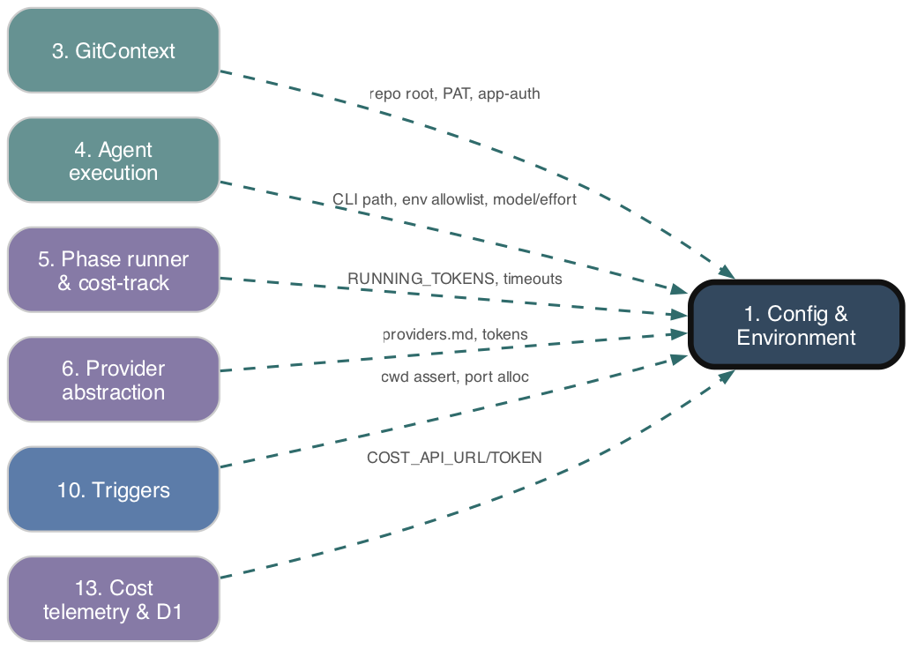

Config & Environment
As-is reference. Ground truth: source code.

Purpose
The substrate every other subsystem reads. Provides three kinds of static configuration: (1) process-environment accessors — secrets, paths, and the resolved Claude CLI executable, loaded once at module import from .env; (2) runtime tuning constants — retry caps, token budgets, timeouts, cron-cycle intervals, and the per-slash-command model/effort routing maps; (3) per-target-repo project config parsed from a repository's .adw/ markdown files. All values are read AS-IS by orchestrators, agents, phases, and triggers; this subsystem performs no orchestration of its own.
Responsibilities
- Load
.env(viadotenv.config()) at import time and expose typed env-var accessors with defaults. - Resolve and cache the Claude CLI path (
resolveClaudeCodePath→ absolute path orwhich claude). - Derive repo-root and working-directory path constants; assert trigger scripts run from the repo root.
- Build a secrets allowlist (
getSafeSubprocessEnv) for Claude CLI subprocesses. - Hold model-tier and reasoning-effort maps keyed by slash command, with a normal and a
/fast-/cheapvariant, plus selector helpers. - Hold retry/token/concurrency/heartbeat/pause-queue constants (most overridable via env vars).
- Compute per-phase agent watchdog timeouts (
getAgentTimeoutForPhase). - Load and parse a target repo's
.adw/markdown into a typedProjectConfig, with defaults when files are absent.
Key Files
| Path | Role |
|---|---|
| --- | --- |
adws/core/environment.ts |
.env load, Claude CLI path resolution + cache, provider secret accessors, path constants (REPO_ROOT, LOGS_DIR, SPECS_DIR, AGENTS_STATE_DIR, WORKTREES_DIR, TARGET_REPOS_DIR), assertCwdIsRepoRoot, SAFE_ENV_VARS allowlist + getSafeSubprocessEnv. |
| --- | --- |
adws/core/config.ts |
Retry/token/concurrency/heartbeat/pause constants (env-overridable); AGENT_DEFAULT_TIMEOUT_MS; re-exports environment + modelRouting symbols for backward compatibility. |
| --- | --- |
adws/core/modelRouting.ts |
ModelTier / ReasoningEffort types; SLASH_COMMAND_MODEL_MAP(_FAST), SLASH_COMMAND_EFFORT_MAP(_FAST); isFastMode, getModelForCommand, getEffortForCommand. |
| --- | --- |
adws/core/agentTimeouts.ts |
AGENT_PHASE_TIMEOUT_MAP, getAgentTimeoutForPhase (env AGENT_PHASE_TIMEOUT_<PHASE> → static map → default). |
| --- | --- |
adws/core/projectConfig.ts |
ProjectConfig types + defaults; markdown-section parser; parseCommandsMd/parseProvidersMd/parseScenariosMd/parseReviewProofMd/parseUnitTestsEnabled/parseApplicationType; loadProjectConfig. |
| --- | --- |
adws/core/constants.ts |
OrchestratorId map, MAX_AUTO_MERGE_ATTEMPTS (string-literal constants, not env-driven). |
| --- | --- |
adws/core/index.ts |
Barrel re-exporting all of the above. |
| --- | --- |
.adw/commands.md, project.md, providers.md, scenarios.md, review_proof.md, conditional_docs.md |
Per-repo config inputs parsed by loadProjectConfig. |
Behavior & Flows
- Import-time env load.
environment.tsrunsdotenv.config()on import; constants are evaluated once.LOGS_DIR/SPECS_DIR/AGENTS_STATE_DIR/WORKTREES_DIRare derived fromprocess.cwd();REPO_ROOTis derived from the file's own location (import.meta.url, independent of cwd).assertCwdIsRepoRoot()exits(1) with a stderr message when cwd ≠REPO_ROOT; triggers call it at entry. - Claude CLI resolution.
resolveClaudeCodePath()returns the cached path; otherwise usesCLAUDE_CODE_PATHif absolute and existing, elseexecSync('which claude'), else throws.clearClaudeCodePathCache()forces re-resolution (used byclaudeAgent.tsafter ENOENT). - Subprocess sanitization.
getSafeSubprocessEnv()copies only theSAFE_ENV_VARSallowlist fromprocess.env, deliberately excluding e.g.GITHUB_PERSONAL_ACCESS_TOKEN(only canonicalGITHUB_PATpasses). - Model/effort selection.
isFastMode(issueBody)matches/fastor/cheap(word-boundary, case-insensitive).getModelForCommand/getEffortForCommandpick the_FASTmap when fast mode is on. Effortundefined⇒ no--effortflag (e.g. haiku commands).claudeAgent.tsemits--model <tier>and conditionally--effort <level>. - Per-phase timeout.
getAgentTimeoutForPhase(phase): envAGENT_PHASE_TIMEOUT_<UPPER>→AGENT_PHASE_TIMEOUT_MAP[phase]→AGENT_DEFAULT_TIMEOUT_MS(30 min default). - Project config load.
loadProjectConfig(targetRepoPath): if<repo>/.adw/is missing/not-a-dir, returnsgetDefaultProjectConfig(). Otherwise each file is read independently in a try/catch; a missing/unreadable file falls back to its per-file default (never throws). Markdown is parsed byparseMarkdownSections(## Heading→ lowercased key → trimmed body).commands.md/scenarios.md/providers.mdmap known headings onto config keys;review_proof.mdparses## Tagsand## Supplementary Checksmarkdown tables;project.mdyieldsapplicationType(webelsecli) andparseUnitTestsEnabled(supports both## Unit Tests: enabledinline and body form);conditional_docs.mdis parsed byparseConditionalDocs(14. Docs & living-docs">subsystem 14).
Data Structures
ProjectConfig { commands: CommandsConfig; projectMd; conditionalDocsMd; conditionalDocs: ConditionalDocsRegistry; reviewProofMd; hasAdwDir; providers: ProvidersConfig; scenarios: ScenariosConfig; scenariosMd; reviewProofConfig: ReviewProofConfig; applicationType: 'cli'|'web' }.CommandsConfig(15 fields incl.packageManager,installDeps,runLinter,typeCheck,runTests,runBuild,startDevServer,healthCheckPath,libraryInstall,scriptExecution,runScenariosByTag,runRegressionScenarios,testDirectory,testFramework).ScenariosConfig(scenarioDirectory,runByTag,runRegression, optionalperIssueScenarioDirectory/regressionScenarioDirectory/vocabularyRegistry,stepDefDirectory,bddFramework).ProvidersConfig(codeHost, optionalcodeHostUrl;issueTracker, optionalissueTrackerUrl/issueTrackerProjectKey; platform names lowercased, URLs case-preserved).ReviewProofConfig { tags: ReviewTagEntry[]; supplementaryChecks: SupplementaryCheck[] }.ModelTier = 'opus'|'sonnet'|'haiku';ReasoningEffort = 'low'|'medium'|'high'|'xhigh'|'max'; slash-command-keyedRecordmaps.
Public Interface
- Env/paths:
REPO_ROOT,LOGS_DIR,SPECS_DIR,AGENTS_STATE_DIR,WORKTREES_DIR,TARGET_REPOS_DIR,assertCwdIsRepoRoot(). - Secrets:
GITHUB_PAT,JIRA_*,GITLAB_*,CLOUDFLARE_ACCOUNT_ID,R2_*,COST_API_URL,COST_API_TOKEN. - Claude CLI:
CLAUDE_CODE_PATH,resolveClaudeCodePath(),clearClaudeCodePathCache(),getSafeSubprocessEnv(). - Routing:
getModelForCommand(),getEffortForCommand(),isFastMode(), the four maps,getAgentTimeoutForPhase(). - Tuning constants:
MAX_TEST_RETRY_ATTEMPTS,MAX_REVIEW_RETRY_ATTEMPTS,MAX_VALIDATION_RETRY_ATTEMPTS,MAX_FAILURES,MAX_THINKING_TOKENS,TOKEN_LIMIT_THRESHOLD,MAX_CONTEXT_RESETS,MAX_PROGRESS_CHECKPOINTS,MAX_CONCURRENT_PER_REPO,GRACE_PERIOD_MS,HEARTBEAT_*,*_INTERVAL_CYCLES,COST_REPORT_CURRENCIES,RUNNING_TOKENS,SHOW_COST_IN_COMMENTS,AGENT_DEFAULT_TIMEOUT_MS. - Project config:
loadProjectConfig(),getDefault*Config(),parseCommandsMd/ProvidersMd/ScenariosMd/ReviewProofMd,parseMarkdownSections,parseUnitTestsEnabled,parseApplicationType. - Constants:
OrchestratorId,MAX_AUTO_MERGE_ATTEMPTS.
Dependencies
- Upstream (depends on):
- Node stdlib:
child_process(execSync),fs,os,path,url; npmdotenv. .envfile andprocess.env; the target repo's.adw/directory on disk.conditionalDocsRegistry.parseConditionalDocs(14. Docs & living-docs">subsystem 14) forProjectConfig.conditionalDocs.types/issueTypes.SlashCommand(the keyspace of the routing maps).- Downstream (depended on by): essentially every subsystem — Agent execution, Phase runner, Providers, Phases/orchestrators, BDD, Coordination kernel, Triggers, Cost telemetry, Docs, Screenshots, Supply-chain.
Interactions
| Other subsystem | Direction | What is exchanged |
|---|---|---|
| --- | --- | --- |
| 4. Agent execution | called-by | resolveClaudeCodePath, getSafeSubprocessEnv, getModelForCommand/getEffortForCommand → --model/--effort; getAgentTimeoutForPhase watchdog (claudeAgent.ts, commandAgent.ts). |
| --- | --- | --- |
| 7. Phases & orchestrators | called-by | loadProjectConfig → ProjectConfig; path constants; retry caps; OrchestratorId. |
| --- | --- | --- |
| 6. Provider abstraction | called-by | ProvidersConfig + JIRA_*/GITLAB_*/GITHUB_PAT secrets select/configure backends. |
| --- | --- | --- |
| 8. BDD / scenario subsystem | called-by | ScenariosConfig, CommandsConfig.runScenariosByTag/runRegressionScenarios/testFramework/testDirectory. |
| --- | --- | --- |
| 9. Coordination kernel | called-by | heartbeat/cron-cycle/concurrency constants, GRACE_PERIOD_MS, MAX_CONCURRENT_PER_REPO. |
| --- | --- | --- |
| 10. Triggers | called-by | assertCwdIsRepoRoot, *_INTERVAL_CYCLES, pause-queue constants. |
| --- | --- | --- |
| 13. Cost telemetry & D1 | called-by | COST_API_URL/COST_API_TOKEN, COST_REPORT_CURRENCIES, RUNNING_TOKENS, SHOW_COST_IN_COMMENTS. |
| --- | --- | --- |
| 14. Docs & living-docs | bidirectional | supplies conditionalDocsMd raw + reviewProofConfig; consumes parseConditionalDocs. |
| --- | --- | --- |
| 15. Screenshots | called-by | CLOUDFLARE_ACCOUNT_ID, R2_ACCESS_KEY_ID, R2_SECRET_ACCESS_KEY. |
PRD Divergences
PRD specs/prd/multi-language-test-and-bdd-support.md matches the AS-IS code: CommandsConfig carries testFramework/testDirectory and ScenariosConfig carries bddFramework/stepDefDirectory with the documented defaults, and the parsers/defaults are present. No divergences observed; the legacy hardcoded-src/ gate the PRD proposes dropping is not enforced inside this subsystem (it lives in the test/BDD subsystem).